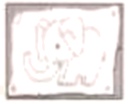
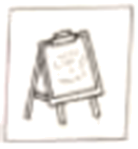
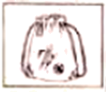
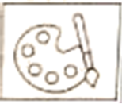
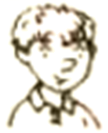

2023年北京中考英语 第21—23题
(一) 阅读下列课程介绍, 请根据人物喜好和需求匹配最适合的课程, 并将课程所对应的A、B、C、D选项填在相应位置上。选项中有一项为多余选项。
A
Short Art Courses
A. Wild Art This course is about drawing and painting. You’ll use your new skills to make a wall poster of animals. And we’ve got lots of picture books to give you ideas.  | B. Art Matters This course teaches you different drawing skills. We’ll get you to draw the latest styles of clothes. If you like designing clothes and want to study it at college, join us!  |
C. Creative Art This course is about making bags to keep your sports clothes in. We provide lots of materials. And you’ll visit art museums to get some creative ideas.  | D. Art Magic This course is about telling good stories in pictures. There’ll be cartoon films to watch and instruction in how to draw your favorite characters.  |
21. ________ I’m interested in designing clothes and want to study it at college.
Alice
22. ________ I enjoy making wall posters of animals and I’d like to read picture books.

Tony
23. ________ I like making hags and want to visit art museums to get creative ideas.
Harry